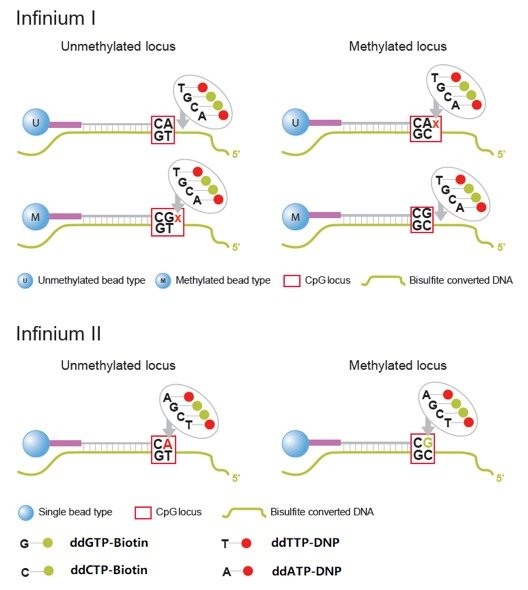
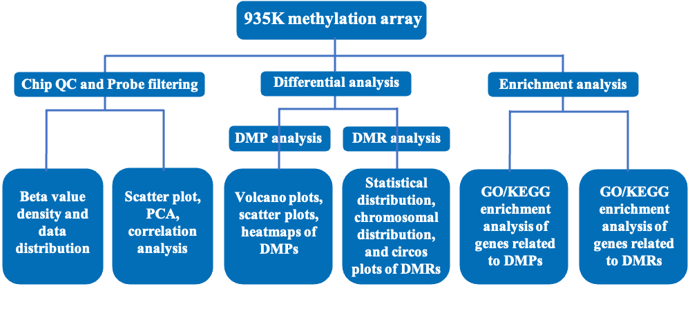
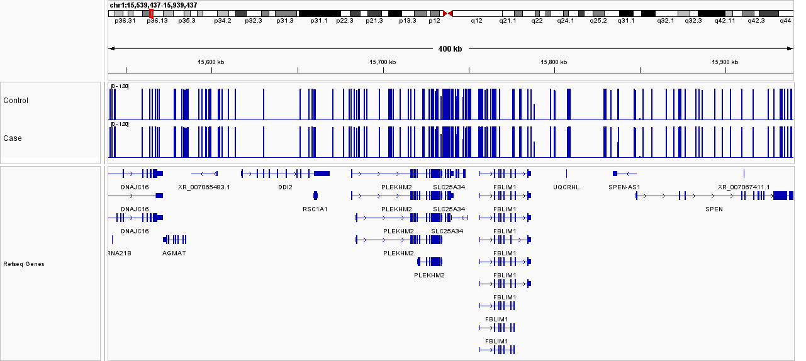
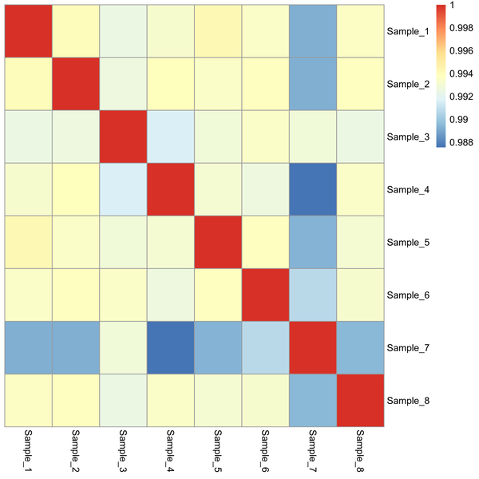
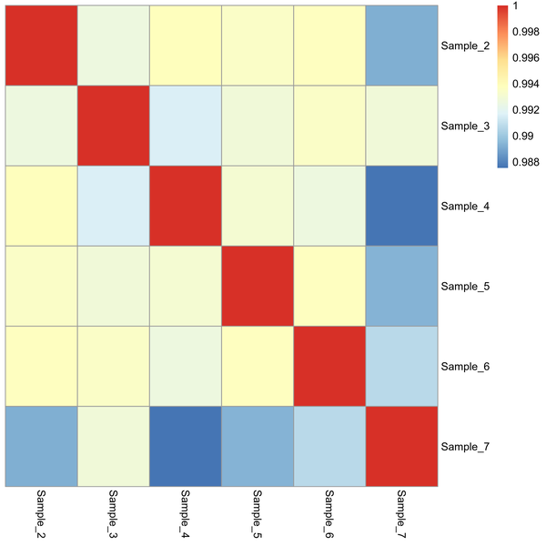

Novogene Human DNA Methylation Assay (930K) Demo Report
| Project Number | Methylation Analysis |
| Project Name | XXXXXXXXXXXXXXXXXXXXX |
| Project Number | Methylation Analysis |
| Report date | 2025-10-27 |
1. Sample Information
Table 1-1 information of samples
| Sample_name | Group | Sample_type | Loci_detection_rate |
|---|---|---|---|
| sample1 | —— | Blood/Bloot Clot | —— |
| sample2 | —— | Blood/Bloot Clot | —— |
| sample3 | —— | Blood/Bloot Clot | —— |
| sample4 | —— | Blood/Bloot Clot | —— |
| sample5 | —— | Blood/Bloot Clot | —— |
| sample6 | —— | Blood/Bloot Clot | —— |
| sample7 | —— | Blood/Bloot Clot | —— |
| sample8 | —— | Blood/Bloot Clot | —— |
2. Introduction of Illumina Methylation Array
The Illumina methylation array, Infinium™ MethylationEPIC v2.0 BeadChip (abbreviated as the 930K Methylation Array), provides researchers with a high-performance and cost-effective methylation profiling solution. Compared to its predecessor, the MethylationEPIC v1.0 (850K), it has removed underperforming probes and added approximately 186,000 new probes, including new content based on expert feedback and epigenetic evaluations of human cancer/cell samples. Not only has it expanded coverage of CpG islands and improved exon coverage, but it has also enabled more accurate copy number variation (CNV) detection. Meanwhile, the annotated genome version has been updated from HG19 to HG38 and GenCode database version v41, better facilitating epigenomic research.
Its detection principle is as follows：

Figure 2-1. Detection principle of 930K beadchip
3. Data Analysis and Result Statistics
3.1 Bioinformatics Analysis Workflow

Figure 3-1 Bioinformatics Analysis Workflow
3.2 Data Quality Control
The methylation level of a site is generally calculated using raw signal intensity values, with the beta value (β) commonly employed as an indicator to measure the methylation level of a specific site. This value ranges between (0,1); theoretically, the closer it is to 1, the higher the methylation level of the site, and the closer it is to 0, the lower the methylation level. It is generally recognized that a beta value greater than 0.6 indicates hypermethylation, a beta value less than 0.2 indicates hypomethylation, and a beta value between 0.2 and 0.6 represents a heterogeneously methylated state.
The calculation formula for the beta value is as follows: $$ \beta = \frac{M}{M + U} $$
Where M represents the signal intensity of methylated probes, and U represents the signal Intensity of unmethylated probes.
To calculate the beta value, the raw IDAT files from the chip were imported into the R package sesame (version 1.17.11) [1], and quality control (QC) was performed on the chip data. The specific data QC steps are as follows：
- （1）Detected p-value filtering: Remove all sites with a detected p-value greater than 0.05；
- （2）Filtering of non-specific probes；
- （3）Correction for staining bias；
- （4）Correction for background signal.
3.2.1 Beta Value Density Analysis
The density curve plots of sample beta values visually present the methylation status between samples and between groups, enabling an intuitive understanding of the overall sample conditions and preliminary analysis of whether the sample characteristics align with the expected experimental design.
Figure 3-2 Density Distribution Curve of Methylation Beta Values
Note: The X-axis represents the beta value, and the Y-axis represents the density value. For normal samples, the density distribution curve should be smooth in the middle with two peaks at both ends, indicating that the vast majority of methylation sites are in either a hypermethylated or hypomethylated state. The number in parentheses in the figure title denotes the number of probes remaining after filtering for subsequent analysis.
Result file path: See the .png/.pdf files under 1.QC/1_Raw_Data_and_Pre_Process/*Norm_densityPlot.png/pdf in the Result directory.
3.2.2 Beta Value Data Box plot Distribution
After quality control (QC), the methylation levels of each sample are shown in the following figure:
Figure 3-3 Box Plot of Beta Values for Methylation Levels
Note: The X-axis represents sample names, and the Y-axis represents sample beta values. A box plot (Box-whisker Plot) uses five statistical measures—the minimum value, first quartile (Q1), median (Q2), third quartile (Q3), and maximum value—to display information such as the overall dispersion of methylation levels for each sample. Judgments regarding intra-group reproducibility and the magnitude of inter-group differences can be made based on the degree of distribution overlap.
Result file path: See the .png/.pdf files under 1.QC/1_Raw_Data_and_Pre_Process/*Beta_Norm_BoxPlot.png/pdf in the Result directory. The plotting data (Figure 3-3) is based on normbetas.csv within 1_Raw_Data_And_Pre_Process/*/ in the same directory. To avoid incomplete display when opening in Excel due to a large number of sites, it is recommended that users view the files using Notepad++ software.
3.2.3 Beta Value Data Stacked Plot Distribution
All samples are categorized into three beta value groups: unmethylated (beta ≤ 0.2), intermediately methylated (0.2 < beta < 0.6), and methylated (beta ≥ 0.6). The distributions are as follows:

Figure 3-4 Stacked Plot of Methylation Beta Value Statistics
Note: The X-axis represents sample names, and the Y-axis represents the number of sites. Different colors in the bars correspond to different methylation level intervals (see the legend for details). Methylation distributions among biological replicates are generally similar.
Result file path: See the .png/.pdf files under 1.QC/1_Raw_Data_and_Pre_Process/*normbetas_stat.png/pdf in the Result directory. The plotting data is based on the statistical file 1_Raw_Data_And_Pre_Process/*/normbetas_stat.csv in the same directory.
3.2.4 Integrative Genomics Viewer
Methylation levels at sites can be visually browsed using the Integrative Genomics Viewer (IGV). IGV has the following features:
- （1）Displays methylation status at specific genomic loci for single or multiple samples across different scales, including methylation levels and site distributions on various chromosomes, as well as annotated exons, introns, splice junctions, and intergenic regions；
- （2）Shows methylation site density and levels in different regions across various scales;
- （3）Displays gene annotation information;
- （4）Supports downloading various annotation information from remote servers and loading annotation information locally.
As shown below:

Figure 3-5 IGV Browser Interface (Demo)
Note: The above is a sample image. Actual results can be viewed by inputting the 1.QC/1_Raw_Data_And_Pre_Process/*Allsample.igv file from the Result directory into the IGV software.
3.2.5 Correlation Heatmap
The sample correlation heatmap is used to visualize the correlations between samples, generated by calculating the correlation coefficients between each pair of samples.



Figure 3-6 Sample Correlation Heatmap
Note: Both the X-axis and Y-axis represent sample names. Each point corresponds to the correlation between two samples. Colors range from blue (low correlation) to red (high correlation), indicating the strength of the correlation between the two samples. Higher sample correlation implies greater similarity in their overall methylation profiles.
Result file path: See the .png/.pdf files under 1.QC/1_Raw_Data_and_Pre_Process/*Correlation.png/pdf in the Result directory. The correlation data are provided in the Correlation.txt file in the same directory.
3.2.6 Scatter Plot
A correlation scatter plot of methylation beta values allows intuitive visualization of the overall trend of methylation distribution in two groups of samples.
Figure 3-7 Correlation Scatter Plot of Methylation Beta Values
Note: Points in the figure represent detected methylation sites. The X and Y axes represent the average methylation levels of corresponding sites in different groups. R denotes the inter-group correlation coefficient; the larger the absolute value of R, the more similar the methylation profiles of sites between the two groups. The p-value indicates significance, with p<0.05 generally considered statistically significant.
Result file path: See the .png/.pdf files under 1.QC/1_Raw_Data_And_Pre_Process/Scatter_plot.png/pdf in the Result directory.
3.2.7 PCA Analysis
Principal Component Analysis (PCA) is a statistical method used to identify key sources of variation in multivariate data. It transforms a set of potentially correlated variables into a set of linearly uncorrelated variables (called principal components) through orthogonal transformation, thereby revealing the underlying structure of the data and simplifying complex problems. PCA aims to reduce the number of variables while minimizing information loss, with the resulting composite variables being uncorrelated. The results of PCA for the current samples are as follows:
Figure 3-8 PAC plot of methylation level
Note: The X-axis and Y-axis in the figure represent Principal Component 1 (PC1) and Principal Component 2 (PC2), respectively, which are orthogonal and independent of each other. Points of different colors represent different groups. The spatial distance between points reflects the similarity of methylation profiles between samples; closer distances indicate more similar methylation states. A confidence level of 0.95 was selected for this project report.
Result file path: See the .png/.pdf files under 1.QC/1_Raw_Data_and_Pre_Process/*_Beta_Norm_PCA_nolabel.png/pdf in the Result directory. Since samples within the same group are displayed in the same color, it may be difficult to distinguish specific outlier samples solely from the unlabeled plot. For detailed sample names, refer to the Sample_Beta_Norm_PCA.png/.pdf file in the same directory, which includes sample labels.
3.3 Differentially Methylated Positions (DMPs)
3.3.1 DMP Analysis Workflow
Differentially Methylated Positions (DMPs) are a critical component of methylation studies and are essential for identifying potential biomarkers. To identify DMPs, samples are first grouped into two categories (e.g., control vs. case). The sesame software (SEnsible Step-wise Analysis of DNA MEthylation BeadChips) is then used to perform a mixed linear model analysis on the two groups, yielding detected DMPs. These DMPs undergo false discovery rate (FDR) correction to obtain adjusted P-values (adj.P.Val). When filtering DMPs based on significance, the typical criteria prioritize sites with adj.P.Val < 0.05 and |Δβ| ≥ 0.2. However, these thresholds may be adjusted based on project-specific requirements. For this study, DMPs were filtered using adj.P.Val < 0.05 and |Δβ| ≥ 0.2.
3.3.2 DMP Data Presentation Table
Table 3-1 DMP Data Presentation Table
| Probe_ID | logFC | P_Value | adj_P_Val | control_AVG | case_AVG | deltaBeta | CHR | MAPINFO | Strand | Type | gene | feature | cgi | feat.cgi | feat.UCSC_Islands_Name |
|---|---|---|---|---|---|---|---|---|---|---|---|---|---|---|---|
| cg00086247_BC21 | -0.310152847546219 | 0.00200640762098126 | 0.923791637276301 | 0.547507466043813 | 0.237354618497595 | -0.310152847546219 | chr5 | 29568226 | R | II | Unknow | OpenSea | Unknow-OpenSea | ||
| cg00191853_TC21 | -0.261584718325372 | 0.0116913759469972 | 0.923791637276301 | 0.694615949267161 | 0.433031230941789 | -0.261584718325372 | chr8 | 100165505 | F | II | Unknow | OpenSea | Unknow-OpenSea | ||
| cg00923880_BC21 | -0.250292302395885 | 0.0402007796150728 | 0.923791637276301 | 0.716811681376604 | 0.466519378980718 | -0.250292302395885 | chr8 | 19755667 | R | II | Unknow | Shore | Unknow-Shore | chr8:19756620-19757796 | |
| cg01931766_BC21 | 0.31181938957702 | 0.0224616035832307 | 0.923791637276301 | 0.619212077007219 | 0.931031466584239 | 0.31181938957702 | chr12 | 108668264 | F | II | Unknow | OpenSea | Unknow-OpenSea | ||
| cg02210151_TC21 | 0.20019540181679 | 0.00827008561259888 | 0.923791637276301 | 0.496008651542731 | 0.696204053359521 | 0.20019540181679 | chr10 | 121596527 | F | II | FGFR2 | 5UTR | Shore | 5UTR-Shore | chr10:121597102-121598771 |
Note:
- (1) Probe_ID：Name of the probe.
- (2) logFC： Log2 fold change (FC).
- (3) P_Value：Raw P-value.
- (4) adj_P_Val：Adjusted P-value (after FDR correction).
- (5) control_AVG：Average beta value in the control group.
- (6) case_AVG：Average beta value in the case group.
- (7) deltaBeta：Difference in beta values between the case and control groups (case_AVG - control_AVG).
- (8) CHR：Chromosome number in the reference genome (GRCh38).
- (9) MAPINFO： Genomic position on the chromosome.
- (10) Strand：Probe sequence direction (F for forward, R for reverse).
- (11) Type：Probe type (Type I or Type II).
- (12) gene：Associated gene name.
- (13) feature： Feature type (e.g., exon, intron).
- (14) cgi：CpG island，CpG island (CpG island annotation).
- (15) feat.cgi：CpG island feature type (e.g., shore, shelf).
- (16) feat.UCSC_Islands_Name：Name of the CpG island (CGI) in the UCSC database.
I. Filtered DMP results: The file DMP_Significant_*absdeltaBeta.csv under 2.DMP/*vs*/ in the Result directory (thresholds are reflected in the filename). II. Unfiltered DMP results: The allcpg.csv file in the same directory.
3.3.3 Volcano Plot
Volcano plots enable rapid visualization of the proportions of hypermethylated and hypomethylated sites. A volcano plot for all differentially methylated positions (DMPs) across a single comparison group is shown below:
Figure 3-9 Volcano Plot
Note: Each point in the volcano plot represents a methylation site. The X-axis denotes Δβ (the difference in beta values between groups), and the Y-axis represents -log(adj.P.Val) (negative log-transformed adjusted P-value). The two critical lines on the X-axis are set at ±0.2. Points in the top-left and top-right quadrants indicate sites with differential methylation between samples. In the analysis, 5 CpG sites with |Δβ| > 0.2 and 5 CpG sites with adj.P.Val < 0.05 are highlighted. A larger absolute value of Δβ on the X-axis indicates greater differences in methylation levels between the two groups; a larger Y-axis value indicates more significant differences, suggesting more reliable identified DMPs.
Result file path: See the .png/.pdf files under 2.DMP/*vs*/DMP_Vocalno_plot_label.png/pdf in the Result directory.
3.3.4 Scatter Plot
The scatter plot of the comparison group is shown in the figure below:
Figure 3-10 Scatter Plot
Note: The X-axis and Y-axis represent the average beta values of the two groups, respectively. Red points in the plot indicate sites with Δβ differences, while green points represent sites without differences.
Result file path: See the .png/.pdf files under 2.DMP/*vs*/DMP_Scatter_plot.png/pdf in the Result directory.
3.3.5 Heatmap
A total of 5,000 DMPs were randomly selected for plotting; if fewer than 5,000 DMPs were identified, all available DMPs were plotted.
Figure 3-11 Heatmap
Note: The X-axis represents different samples, and the Y-axis represents DMPs. Different colors correspond to methylation levels at specific sites. Clustering results by columns typically group biological replicates within the same treatment group into a single cluster. Colors approaching dark red or dark blue indicate higher or lower methylation levels of meaningful sites in different samples, respectively.
Result file path: See the .png/.pdf files under 2.DMP/*vs*/DMP_heatmap.png/pdf in the Result directory.
3.3.6 DMP Count Statistics
This section presents statistics on the number of sites and genes with increased, decreased, or total methylation.
Figure 3-12 Statistics of Sites with Increased or Decreased Methylation
Note: This plot shows the counts of sites. "Hyper" refers to the number of sites with increased methylation (Δβ > 0.2), and "Hypo" refers to the number of sites with decreased methylation (Δβ < -0.2).
Result file path: See the .png/.pdf files under 2.DMP/*vs*/DMP_Number.png/pdfin the Result directory.
This section presents statistics on the number of sites and genes with increased, decreased, or total methylation.
Figure 3-13 Gene Count Statistics
Note: The above figure illustrates the gene count information. "Hyper" represents the statistical count of genes containing sites with increased methylation (Δβ > 0.2), while "Hypo" represents the statistical count of genes containing sites with decreased methylation (Δβ < -0.2).
Result file path: Refer to the .png/.pdf file at: 2.DMP/*vs*/DMP_Gene_Number.png/pdf.
3.3.7 DMP Count Statistics by Region
Statistically count the number of hypomethylated sites (0 < beta ≤ 0.2), heterogeneously methylated sites (0.2 < beta < 0.6), and hypermethylated sites (0.6 ≤ beta ≤ 1) across different regions; as well as the number of sites with increased methylation (hyper, Δβ > 0.2) and decreased methylation (hypo, Δβ < -0.2) within these regions.
Table 3-2 Statistics of Sites with Increased or Decreased Methylation by Region
| feature | Total_num | Hyper | Hypo |
|---|---|---|---|
| 3UTR | 1 | 1 | 0 |
| 5UTR | 4 | 4 | 0 |
| Exon | 11 | 6 | 5 |
| TSS1500 | 4 | 4 | 0 |
| TSS200 | 2 | 2 | 0 |
| Unknow | 81 | 28 | 53 |
| Total | 103 | 45 | 58 |
- (1) Feature: Feature type (e.g., exon, intron).
- (2) Total_num: Total number of sites in the region.
- (3) Hyper: Number of sites with increased methylation in the region.
- (4) Hypo: Number of sites with decreased methylation in the region.
Result file path: See the DMP_region_Statistics.csv file under 2.DMP/*vs*/DMP_region_Statistics.csv in the Result directory.
Table 3-3 Statistics of Site Counts by Methylation Status in Different Genomic Regions for the control Group
| feature | control_num | Heterogeneously_Methylated | Hypermethylated | Hypomethylated |
|---|---|---|---|---|
| 3UTR | 1 | 1 | 0 | 0 |
| 5UTR | 4 | 2 | 0 | 2 |
| Exon | 11 | 5 | 5 | 1 |
| TSS1500 | 4 | 4 | 0 | 0 |
| TSS200 | 2 | 2 | 0 | 0 |
| Unknow | 81 | 30 | 45 | 6 |
| Total | 103 | 44 | 50 | 9 |
- （1）feature: Type of genomic feature
- （2）control_num: Number of DMPs (Differentially Methylated Positions) in the control group within this region
- （3）Heterogeneously_Methylated: Number of partially methylated DMPs in this region
- （4）Hypermethylated: Number of hypermethylated DMPs in this region
- （5）Hypomethylated: Number of hypomethylated DMPs in this region
Result file path: Refer to the CSV file at: 2.DMP/*vs*/DMP_*_Statistics.csv.
Table 3-4 Statistics of Site Counts by Methylation Status in Different Genomic Regions for the case Group
| feature | case_num | Heterogeneously_Methylated | Hypermethylated | Hypomethylated |
|---|---|---|---|---|
| 3UTR | 1 | 0 | 1 | 0 |
| 5UTR | 4 | 2 | 2 | 0 |
| Exon | 11 | 7 | 3 | 1 |
| TSS1500 | 4 | 1 | 3 | 0 |
| TSS200 | 2 | 1 | 1 | 0 |
| Unknow | 81 | 45 | 27 | 9 |
| Total | 103 | 56 | 37 | 10 |
- （1）feature: Type of genomic feature
- （2）case_num: Number of DMPs (Differentially Methylated Positions) in the case group within this region
- （3）Heterogeneously_Methylated: Number of partially methylated DMPs in this region
- （4）Hypermethylated: Number of hypermethylated DMPs in this region
- （5）Hypomethylated: Number of hypomethylated DMPs in this region
Result file path: Refer to the CSV file at: 2.DMP/*vs*/DMP_*_Statistics.csv.
3.3.8 TSS Region Analysis of DMPs
This analysis focuses on the methylation levels (beta values) of DMPs within the 5 kb upstream to 5 kb downstream regions of Transcription Start Sites (TSS) across different groups.
Figure 3-14 Methylation Distribution of DMPs in TSS Upstream/Downstream Regions Across Groups
Note: This plot shows the methylation levels of DMPs in the 5 kb TSS upstream/downstream regions for different groups. The solid lines (red/blue) represent fitted curves of mean beta values within each group, with gray shading indicating the 95% confidence interval around the mean.
Result file path: See the result file under 2.DMP/*vs*/DMP_TSS_5000.png/pdf in the Result directory.
3.3.9 Chromosomal Distribution of DMPs
The chromosomal distribution of DMPs visually illustrates the regions of differential methylation across each chromosome, as shown below:
Figure 3-15 Chromosomal Distribution of DMPs
Note: The X-axis represents chromosomal positions, and the Y-axis represents chromosome numbers. Different colors on the chromosomes indicate regions with differential methylation: red for hypomethylation and green for hypermethylation.
Result file path: See the .png/.pdf files under 2.DMP/*vs*/DMP_plot_chr.png/pdf in the Result directory.
3.3.10 Circos Plot
The circos plot provides an intuitive overview of the genome-wide distribution of DMPs and the trends in methylation levels across different treatment groups.
Figure 3-16 Circos Plot
Note: The circos plot is structured with layers from the outermost ring to the innermost ring as follows: chromosomes, beta values of DMPs in the control group (blue), beta values of DMPs in the case group (orange), and delta-Beta values (the difference between the case and control groups, where positive values are shown in red and negative values in green).
Result file path: See the circlize.png file under 2.DMP/*vs*/DMP_circlize.png in the Result directory.
3.4 Differentially Methylated Regions (DMRs)
3.4.1 DMR Analysis Workflow
In the genome, differentially methylated sites often cluster together, forming a differentially methylated region (DMR). These regions range in size from hundreds of base pairs (bp) to megabases (Mb) and are believed to play a crucial role in genomic imprinting regulation. To identify DMRs, we used the sesame software. DMRs were filtered based on a p-value < 0.05, retaining candidate regions with lengths between 200 and 10,000 bp, and requiring a minimum of 7 probes within each region.
3.4.2 DMR Data Presentation Table
Table 3-5 DMR Data Presentation Table
| Seg_ID | Seg_Chrm | Seg_Start | Seg_End | Seg_Est | Seg_Pval | Seg_Pval_adj | control_AVG | case_AVG | Probe_ID | gene | dmr_size | cpgnum_in_dmr |
|---|---|---|---|---|---|---|---|---|---|---|---|---|
| chr3_195441398_195443390 | chr3 | 195441398 | 195443390 | 0.00370371973651449 | 0.0481799199806355 | 0.91633849460548 | 0.0512188163259823 | 0.0549225360624967 | cg00275449_TC21;cg00642303_BC21;cg08138807_TC11;cg09474336_BC21;cg11047049_TC11;cg14973369_BC21;cg15558675_BC21;cg16824377_TC21;cg19252739_TC11;cg25959527_TC11 | ;ACAP2 | 1992 | 10 |
| chr3_195868373_195872235 | chr3 | 195868373 | 195872235 | 0.000561372044298117 | 0.00508226003145578 | 0.846219386040561 | 0.961755304298403 | 0.962316676342701 | cg07808036_BC11;cg11150667_BC11;cg16615155_TC21;cg17913255_BC11;cg19971136_BC11;cg21425003_TC11;cg21505986_BC21;cg22558522_BC21;cg26033513_BC11 | ;TNK2 | 3862 | 9 |
| chr3_196739606_196740584 | chr3 | 196739606 | 196740584 | 2.61317321531045e-05 | 0.0284280019102634 | 0.91633849460548 | 0.0518638457144805 | 0.0518899774466336 | cg06284169_TC21;cg07061775_BC11;cg14685587_BC11;cg16392920_TC11;cg21244153_BC21;cg21840599_TC21;cg22071460_BC11;cg24374090_TC21;cg25793566_TC11 | PAK2; | 978 | 9 |
| chr1_27544235_27551262 | chr1 | 27544235 | 27551262 | 0.00192301181158585 | 0.0403276956980076 | 0.91633849460548 | 0.936217501203383 | 0.938140513014969 | cg00178877_TC21;cg00345792_TC11;cg06825309_TC21;cg07181257_TC21;cg09060489_BC21;cg11229315_TC11;cg13443661_TC21;cg13920090_TC21;cg14925865_BC21;cg15009810_BC21;cg15519670_BC21;cg19818016_BC21;cg20298199_BC21 | AHDC1; | 7027 | 13 |
| chr4_781431_782268 | chr4 | 781431 | 782268 | -0.00256687673164755 | 0.00440391480778562 | 0.841978921352808 | 0.0486771059166157 | 0.0461102291849682 | cg03771185_TC21;cg06051392_TC21;cg06312136_BC11;cg12304296_BC11;cg13029660_BC21;cg24971405_TC21;cg25442020_BC21 | LOC100129917 | 837 | 7 |
Note:
- (1) Seg_ID： Name of the DMR.
- (2) Seg_Chrm：Chromosome number in the reference genome (GRCh38).
- (3) Seg_Start：Start position of the DMR.
- (4) Seg_End：End position of the DMR.
- (5) Seg_Est：Difference in average beta values between comparison groups within the DMR region.
- (6) Seg_Pval：P-value of the DMR region.
- (7) Seg_Pval_adj：Adjusted P-value of the DMR region.
- (8) control_AVG：Average beta value in the control group within the DMR region.
- (9) case_AVG： Average beta value in the case group within the DMR region.
- (10) Probe_ID：CpG sites within the DMR region.
- (11) gene：Genes overlapped with the DMR region.
- (12) dmr_size：: Length of the DMR region.
- (13) cpgnum_in_dmr：Number of CpG probes within the DMR region.
Result file path: See the DMR_control.vs.case.csv file under 3.DMR/*vs*/DMR_control.vs.case.csv in the Result directory.
3.4.3 Length Distribution of DMRs
The length distribution of differentially methylated regions (DMRs) identified through differential analysis is shown in the following figure:
Figure 3-17 Density Distribution Plot of DMR Lengths
Note: The X-axis represents DMR length units, and the Y-axis represents the probability density of DMRs at the corresponding length units. That is, a higher Y-value indicates a greater number of DMRs falling within that length range.
Result file path: See the .png/.pdf files under 3.DMR/*vs*/DMR_Length.png/pdf in the Result directory.
3.5 GO Functional Enrichment Analysis
3.5.1 Brief Introduction to Geno Ontology (GO)
Gene Ontology (GO) is an internationally standardized classification system for gene functions. It aims to establish a linguistic vocabulary standard that defines and describes gene and protein functions, applicable across species and updatable as research advances [2]. GO is divided into three parts: Molecular Function (MF), Biological Process (BP), and Cellular Component (CC). Genes or proteins can be mapped to corresponding GO terms through ID matching or sequence annotation. These GO terms link to specific functional categories (e.g., "DNA binding") or cellular localizations (e.g., "nucleus"). Enrichment analysis for MF, BP, and CC can be performed using DMP and DMR data.
The method for GO functional enrichment analysis is as follows: Firstly, the entire set of genes serves as the background list. The list of differentially methylated genes (or regions) is treated as the candidate list, filtered from the background. The hypergeometric distribution test is used to calculate the P-value, which indicates whether a specific GO functional set is significantly enriched in the candidate list. The P-value is then corrected using the Benjamini & Hochberg multiple testing correction to obtain the false discovery rate (FDR).
The formula for calculating the P-value via the hypergeometric distribution test is as follows:
$$ P = 1 - \sum_{i=0}^{m-1} \frac{\dbinom{M}{i} \dbinom{N-M}{n-i}}{\dbinom{N}{n}} $$
Where:
- (1) N: Total number of genes with GO annotations.
- (2) M: Number of genes annotated to a specific GO term.
- (3) m: Number of differentially methylated genes (or regions) annotated to the specific GO term.
- (4) n: Total number of differentially methylated genes (or regions) in the candidate list.
3.5.2 GO Functional Enrichment Analysis of DMPs
The bar chart of significantly enriched GO terms is shown below. Significantly enriched GO terms were filtered based on a P-value ≤ 0.05 calculated from the hypergeometric test, with up to 10 GO terms displayed per GO category.
Figure 3-18 Bar Chart of Significantly Enriched GO Terms for DMPs
Note: The X-axis represents GO term descriptions, and the Y-axis represents -log(P-value) values. Data from the top 10 terms of MF, CC, and BP categories were used for plotting.
Result file path: See the GO_enrichment_topGO.png/.pdf files under 4.GO/Differential_Methylation_Probes/*vs*/GO_enrichment_topGO.png/pdf in the Result directory. The plotting data are provided in the GO_enrichment_topGO.csv file.
The hierarchical relationship diagram (GO tree) of significantly enriched GO terms across different categories is shown below:
Figure 3-19 Biological Process GO tree
Note: The color intensity in the figure reflects the enrichment level of differentially methylated genes in the GO term, with darker colors indicating more significant enrichment (red being the most significant, followed by yellow). Boxes represent the top 10 most enriched GO terms.
Result file path: See the GO_tree_topGO_BP.png/.pdf files under 4.GO/Differential_Methylation_Probes/*vs*/GO_tree_topGO_BP.png/pdf in the Result directory. The data are provided in the GO_enrichment_BP.csv file.
Figure 3-20 Cellular Component GO tree
Note: The color intensity in the figure reflects the enrichment level of differentially methylated genes in the GO term, with darker colors indicating more significant enrichment (red being the most significant, followed by yellow). Boxes represent the top 10 most enriched GO terms.
Result file path: See the GO_tree_topGO_CC.png/.pdf files under 4.GO/Differential_Methylation_Probes/*vs*/GO_tree_topGO_CC.png/pdf in the Result directory. The data are provided in the GO_enrichment_CC.csv file.
Figure 3-21 Molecular Function GO tree
Note: The color intensity in the figure reflects the enrichment level of differentially methylated genes in the GO term, with darker colors indicating more significant enrichment (red being the most significant, followed by yellow). Boxes represent the top 10 most enriched GO terms.
Result file path: See the GO_tree_topGO_MF.png/.pdf files under 4.GO/Differential_Methylation_Probes/*vs*/GO_tree_topGO_MF.png/pdf in the Result directory. The data are provided in the GO_enrichment_MF.csv file.
3.5.3 GO Functional Enrichment Analysis of DMR
The bar chart of significantly enriched GO terms is shown below. Significantly enriched GO terms were filtered based on a P-value ≤ 0.05 calculated from the hypergeometric test, with up to 10 GO terms displayed per GO category.
Figure 3-22 Bar Chart of Significantly Enriched GO Terms for DMR
Note: The X-axis represents GO term descriptions, and the Y-axis represents -log(P-value) values. Data from the top 10 terms of MF, CC, and BP categories were used for plotting.
Result file path: See the GO_enrichment_topGO.png/.pdf files under 4.GO/Differential_Methylation_Regions/*vs*/GO_enrichment_topGO.png/pdf in the Result directory. The plotting data are provided in the GO_enrichment_topGO.csv file.
The hierarchical relationship diagram (GO tree) of significantly enriched GO terms across different categories is shown below:
Figure 3-23 Biological Process GO tree
Note: The color intensity in the figure reflects the enrichment level of differentially methylated genes in the GO term, with darker colors indicating more significant enrichment (red being the most significant, followed by yellow). Boxes represent the top 10 most enriched GO terms.
Result file path: See the GO_tree_topGO_BP.png/.pdf files under 4.GO/Differential_Methylation_Regions/*vs*/GO_tree_topGO_BP.png/pdf in the Result directory. The data are provided in the GO_enrichment_BP.csv file.
Figure 3-24 Cellular Component GO tree
Figure 3-21 Biological Process GO Tree Note: The color intensity in the figure reflects the enrichment level of differentially methylated genes in the GO term, with darker colors indicating more significant enrichment (red being the most significant, followed by yellow). Boxes represent the top 10 most enriched GO terms.
Result file path: See the GO_tree_topGO_CC.png/.pdf files under 4.GO/Differential_Methylation_Regions/*vs*/GO_tree_topGO_CC.png/pdf in the Result directory. The data are provided in the GO_enrichment_CC.csv file.
Figure 3-25 Molecular Function GO tree
Note: The color intensity in the figure reflects the enrichment level of differentially methylated genes in the GO term, with darker colors indicating more significant enrichment (red being the most significant, followed by yellow). Boxes represent the top 10 most enriched GO terms.
Result file path: See the GO_tree_topGO_MF.png/.pdf files under 4.GO/Differential_Methylation_Regions/*vs*/GO_tree_topGO_MF.png/pdf in the Result directory. The data are provided in the GO_enrichment_MF.csv file.
3.6 KEGG Analysis of Differentially Methylated Sites/Regions
3.6.1 Brief Introduction to KEGG
KEGG (Kyoto Encyclopedia of Genes and Genomes) is a practical database resource that enables the understanding of higher-level functions and biological systems (e.g., cells, organisms, and ecosystems) from a molecular perspective. It integrates large-scale molecular datasets generated by genome sequencing and other high-throughput experimental technologies, linking the obtained gene catalogs to higher-level systemic functions at the cellular, species, and ecosystem levels [3]. Using DMP and DMR data, visualizations such as KEGG Barplots, Dotplots, and Pathway diagrams can be generated. KEGG enrichment analysis of genes associated with differentially methylated sites and regions was performed using the R package clusterProfiler. Enrichment analysis was conducted for each pathway in KEGG via the hypergeometric test to identify significantly enriched pathways among the differentially methylated genes. [3]
Using DMP and DMR data, visualizations such as KEGG Barplots, Dotplots, and Pathway diagrams can be generated. KEGG enrichment analysis of genes associated with differentially methylated sites and regions was performed using the R package clusterProfiler. Enrichment analysis was conducted for each pathway in KEGG via the hypergeometric test to identify significantly enriched pathways among the differentially methylated genes.
3.6.2 KEGG Analysis of DMPs
Figure 3-26 KEGG Barplot
Note: The top 20 significantly enriched pathways for DMPs are displayed. The X-axis represents the number of enriched genes, the Y-axis represents pathway names, and the color intensity of the bars (darker red indicating more significant enrichment) reflects the enrichment level.
Result file path: See the KEGG_Barplot.png/.pdf files under 5.KEGG/Differential_Methylation_Probes/*vs*/KEGG_Barplot.png/pdf in the Result directory.
Figure 3-27 KEGG Dotplot
Note: The x-axis represents the Gene Ratio (number of differential genes in the pathway term / total number of annotated genes in the pathway term). A higher value indicates a greater degree of enrichment. The y-axis displays the names of the pathway terms with the highest enrichment levels. The dot size corresponds to the number of differential genes in the term—larger dots indicate a greater number of enriched genes. The color intensity (redder hue) represents higher enrichment significance.
Result file path: Refer to the .png/.pdf file at: 5.KEGG/Differential_Methylation_Probes/*vs*/KEGG_Dotplot.png/pdf.
Figure 3-28 KEGG Pathway
Note: This figure displays one of the KEGG Pathway maps downloaded using the hyperlinks provided in the "Link" column of the file.
3.6.3 KEGG Analysis of DMR
Figure 3-29 KEGG Barplot
Note: The top 20 significantly enriched pathways for DMR are displayed. The X-axis represents the number of enriched genes, the Y-axis represents pathway names, and the color intensity of the bars (darker red indicating more significant enrichment) reflects the enrichment level.
Result file path: See the KEGG_Barplot.png/.pdf files under 5.KEGG/Differential_Methylation_Probes/*vs*/KEGG_Barplot.png/pdf in the Result directory.
Figure 3-30 KEGG Dotplot
Note: The x-axis represents the Gene Ratio (number of differential genes in the pathway term / total number of annotated genes in the pathway term). A higher value indicates a greater degree of enrichment. The y-axis displays the names of the pathway terms with the highest enrichment levels. The dot size corresponds to the number of differential genes in the term—larger dots indicate a greater number of enriched genes. The color intensity (redder hue) represents higher enrichment significance.
Result file path: See the KEGG_Dotplot.png/.pdf files under 5.KEGG/Differential_Methylation_Regions/*vs*/KEGG_Dotplot
Figure 3-31 KEGG Pathway
Note: This figure displays one of the KEGG Pathway maps downloaded using the hyperlinks provided in the "Link" column of the file
5.KEGG/Differential_Methylation_Regions/*enrichment.csv. If additional KEGG Pathway maps are required, please download them directly using the hyperlinks in the "Link" column.
4、Appendix
4.1 Table 4-1 Software List
| Software name | Version | Analysis content |
|---|---|---|
| sesame | V17.1.11 | Beadchip analysis |
| clusterProfiler | V3.12.0 | Enrichment analysis of gene function |
4.2 Methods
The methods involved in the study can be found in this link “Methods”.Methods
4.3 FAQ
FAQ：FAQ
4.4 References
[1] Wanding Z, Triche T J, Laird P W,et al.SeSAMe: reducing artifactual detection of DNA methylation by Infinium BeadChips in genomic deletions[J].Nuclc Acids Research, 2018(20):20.
[2] Young M D, Wakeeld M J, Smyth G K,et al.goseq: Gene Ontology testing for RNA-seq datasets[J]. 2012.
[3] Kanehisa M, Araki M, Goto S, et al. KEGG for linking genomes to life and the environment.[J]. Nucleic Acids Research, 2007: 480-484.